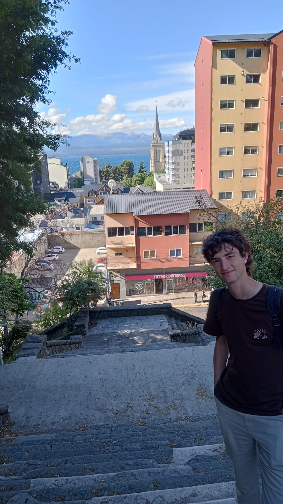

Gabriel Hoyuelos
PhD student in Mathematics
IMECC, University of Campinas (UNICAMP)
Email: g300702@dac.unicamp.br
About me
I am a PhD student in Mathematics at UNICAMP, working with Christian Olivera and supported by a FAPESP fellowship (FAPESP profile). My main interests are stochastic partial differential equations and related topics in probability and analysis.